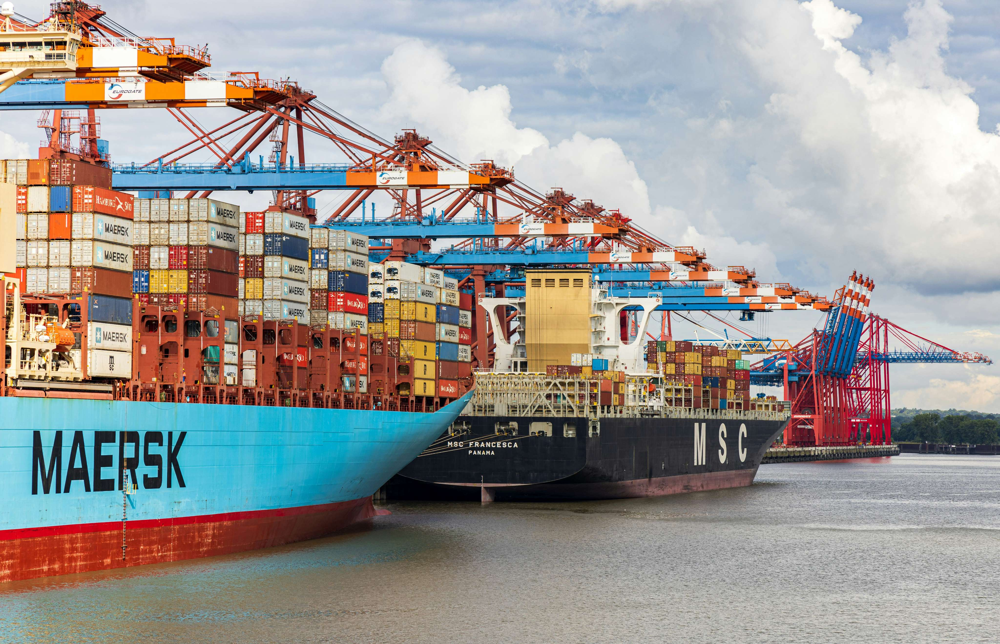

KNG Commodities LLP
International Edible Oil & Commodity Brokerage
Import • Export • Physical Trade Facilitation
About KNG Commodities LLP
KNG Commodities LLP is a Mumbai-based international edible oil and commodity brokerage firm, operating continuously since 2017. Over the years, the firm has developed a strong presence within India’s edible oil import and distribution ecosystem, where execution discipline, market knowledge and long-term credibility are essential.
The company was founded with a clear objective — to act as a professional, transparent and risk-neutral intermediary connecting buyers and sellers across domestic and international markets. In an industry characterised by price volatility, logistical complexity and tight execution timelines, KNG Commodities LLP places strong emphasis on clarity, consistency and operational feasibility.
KNG Commodities LLP operates strictly as a broker-only intermediary. The firm does not buy, sell, store, transport or finance goods, nor does it assume price, quality, inventory or logistics risk. All trades are executed directly between contracting parties based on mutually agreed contractual terms.
Since inception, the firm has worked with a wide spectrum of market participants including domestic refiners, processors, bulk consumers and multinational trading houses. Over time, the firm has been associated with reputed organisations such as Viterra India, Bunge India, Adani Group, Tata Group and COFCO International, along with several established Indian market participants.
With strong industry relationships, practical market understanding and a disciplined approach to execution, KNG Commodities LLP continues to act as a reliable bridge between global suppliers and domestic buyers in India’s edible oil market.
Founder & Director
Nimesh Ashok Galia, Founder & Director of KNG Commodities LLP, brings over 20+ years of hands-on experience in the edible oil trade.
His professional experience spans domestic trading, international imports, bulk cargo execution, containerised movements and refinery-linked trade flows. He has worked closely with refiners, importers, exporters, inspection agencies and logistics providers across India and overseas markets.
Known for his execution-focused approach and strong market relationships, Mr. Galia has built long-standing credibility within the industry. Under his leadership, KNG Commodities LLP has grown into a respected brokerage firm recognised for professionalism, transparent communication and execution reliability.
Products & Trade Specifications
KNG Commodities LLP facilitates physical trade in major edible oils that form the backbone of India’s import and consumption ecosystem. All products are traded strictly on a broker-only basis and follow internationally accepted contract standards.

Crude Palm Oil (CPO)
Crude Palm Oil is the largest imported edible oil into India, primarily sourced from Indonesia and Malaysia and used extensively by refineries.
| Contract | FOSFA 80 / 81 |
|---|---|
| FFA | Max 4.5% |
| Moisture & Impurities | Max 0.50% |
| Usage | Refining & Processing |

RBD Palmolein
RBD Palmolein is a refined palm oil widely consumed across households, food service and FMCG segments.
| FFA (Palmitic) | Max 0.1% |
|---|---|
| Moisture & Impurities | Max 0.1% |
| Iodine Value | Min 56 |
| Melting Point | Max 24°C |

Crude Degummed Soybean Oil
Imported mainly from South American origins and used for refining and blending.
| Contract | FOSFA 54 / ANEC 81 |
|---|---|
| FFA (Oleic) | Max 1.0% |
| Moisture & Volatile | Max 0.20% |
| Insoluble Impurities | Max 0.10% |

Crude Sunflower Oil
Imported primarily from the Black Sea region and preferred for its light taste.
| Contract | FOSFA 54 |
|---|---|
| FFA | Basis 2% (Up to 3% allowable) |
| Moisture & Impurities | Max 0.50% |
India Edible Oil Market — Imports, Storage & Processing
India is one of the world’s largest consumers and importers of edible oils. Despite being a major agricultural economy, domestic oilseed production is structurally insufficient to meet national demand. As a result, edible oil imports form a permanent and essential component of India’s food supply chain rather than a temporary imbalance.
India’s annual edible oil consumption is estimated at 23–25 million metric tonnes. Domestic production supplies only a part of this requirement, and the balance is met through imports of palm oil, soybean oil and sunflower oil. This structural dependency makes India highly sensitive to global price movements, freight costs, currency volatility and geopolitical developments.
1. Import Origins & Vessel Movement
Palm oil imports are predominantly sourced from Indonesia and Malaysia, soybean oil from South America (Argentina and Brazil), and sunflower oil from the Black Sea region. These cargoes arrive through a mix of bulk vessels and containerised shipments depending on origin, contract structure and port infrastructure.
India’s western coastline handles the majority of edible oil imports due to shorter sailing times, deeper drafts and the presence of integrated liquid handling facilities. Vessel scheduling, berth availability and discharge rates play a critical role in execution efficiency and inventory planning.
2. Container Yards, Tank Farms & Stock Holding
Once discharged at ports, edible oils are stored in port-side tank farms, bonded warehouses and container yards before onward movement to refineries and inland consumption centres. Container yards act as a critical buffer between port discharge and inland logistics, especially for containerised imports.
Ports such as Mundra, Kandla and JNPT collectively account for a significant share of India’s edible oil stockholding. These ports are strategically linked to refinery clusters and high-consumption regions across North and Western India.
| Port | Estimated Import Share | Primary Role |
|---|---|---|
| Mundra | 35–40% | Bulk liquid handling & refinery linkage |
| Kandla | 25–30% | Northern India distribution & tank farms |
| JNPT | 15–20% | Containerised imports & inland supply |
3. Processing, Refining & Domestic Distribution
After clearance from ports and container yards, crude edible oils are transported to refineries and processing plants. These facilities carry out refining, bleaching, deodorisation and blending to meet domestic quality standards and consumption preferences.
Processing plants are typically located close to ports or major consumption centres to optimise logistics costs and ensure steady supply. The refined output is then distributed to FMCG manufacturers, food service operators, wholesale markets and retail channels.

National edible oil inventory coverage typically ranges between 30–45 days, depending on import pipeline strength, seasonal demand and price outlook. Inventory levels are actively managed to balance price risk, storage costs and supply continuity.
4. Annual Import Trend (Indicative)
India’s edible oil imports have shown a steady upward trend over recent years, driven by population growth, rising per-capita consumption and limited scope for rapid domestic oilseed expansion. Temporary fluctuations usually reflect policy interventions or global supply disruptions rather than structural demand weakness.
Green trend indicates demand-led growth, while red points highlight stress periods due to freight or supply volatility.
5. Role of Brokerage in Physical Trade
In a high-volume import environment, brokers play a critical role in aligning contractual terms with physical execution. This includes coordination between buyers, sellers, inspection agencies, shipping lines and port operators.
KNG Commodities LLP operates strictly as a broker-only intermediary and does not assume ownership, storage, logistics or financial exposure in any transaction. All trades are executed directly between contracting parties.
Data Sources: Solvent Extractors’ Association of India (SEA), Ministry of Consumer Affairs (Govt. of India), DGCI&S, USDA Oilseeds & Edible Oils Market Reports, public port authority disclosures and industry trade publications.
*Certain analytical interpretations and charts are AI-assisted and indicative in nature.
Contact, Corporate & Legal Information
KNG Commodities LLP is an independent commodity brokerage firm headquartered in Mumbai, India. The firm facilitates domestic and international trade in edible oils strictly on a broker-only basis and does not undertake any trading, storage, logistics or financial exposure.
Registered Office
KNG Commodities LLP
A-Wing, Unit No. 706, Jaswanti Allied Business Centre,
Premises CSL, Kachpada, Ramchandra Lane Extension Road,
Malad West, Mumbai – 400064,
Maharashtra, India
GSTIN: 27AASFK4574H1ZR
Key Contacts
Founder & Director
Nimesh Ashok Galia
📞 +91 98200 29262
✉️ kngcommodities@gmail.com
Operations Head
Prasanna Gadre
📞 +91 97636 33463
✉️ kngprasanna@gmail.com
Broker-Only Trade Disclaimer
KNG Commodities LLP acts strictly as an independent broker-only intermediary. The firm does not buy, sell, store, transport, insure or finance any goods, nor does it take title or ownership of any commodity.
All transactions facilitated by KNG Commodities LLP are executed directly between buyers and sellers based on mutually agreed contractual terms. The firm’s role is limited to introducing counterparties and supporting execution coordination.
KNG Commodities LLP does not assume responsibility or liability for quality, quantity, delivery, payment, performance, defaults, disputes or commercial outcomes arising from transactions facilitated through its brokerage services. All risks remain solely with the contracting parties.
Corporate Positioning & Operating Philosophy
Since commencing operations in 2017, KNG Commodities LLP has focused on disciplined execution, transparent communication and market-aligned trade facilitation. The firm operates with a long-term relationship mindset rather than short-term transactional focus.
Execution feasibility, specification clarity and alignment between contractual terms and physical logistics form the core of the firm’s brokerage philosophy. This approach helps reduce execution risk and supports smoother trade completion for all parties involved.
Website & Information Disclaimer
The information contained on this website is provided solely for general informational purposes. It does not constitute an offer, solicitation, recommendation or advisory service of any kind.
Market data, charts, reports and analytical commentary presented on this website are indicative in nature and intended to provide a broad understanding of industry dynamics. Actual market conditions may vary significantly based on timing, policy changes and commercial factors.
Data Sources: Solvent Extractors’ Association of India (SEA), Ministry of Consumer Affairs (Government of India), Directorate General of Commercial Intelligence and Statistics (DGCI&S), USDA Oilseeds & Edible Oils Market Reports, public port authority disclosures and industry trade publications.
*Certain analytical interpretations, estimates and visualisations presented on this website are AI-assisted and indicative in nature.